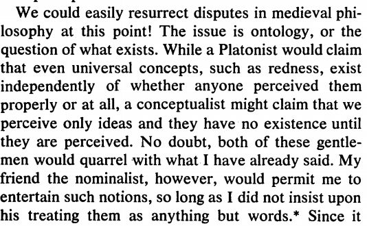
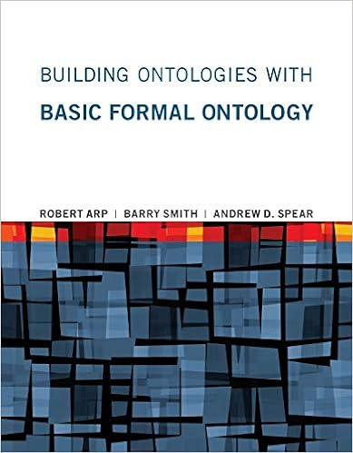
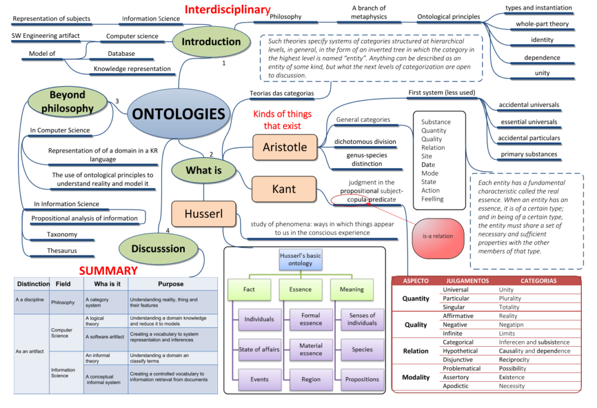
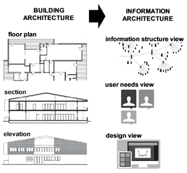
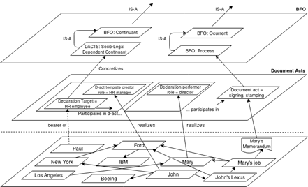
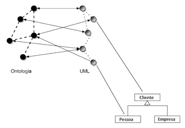
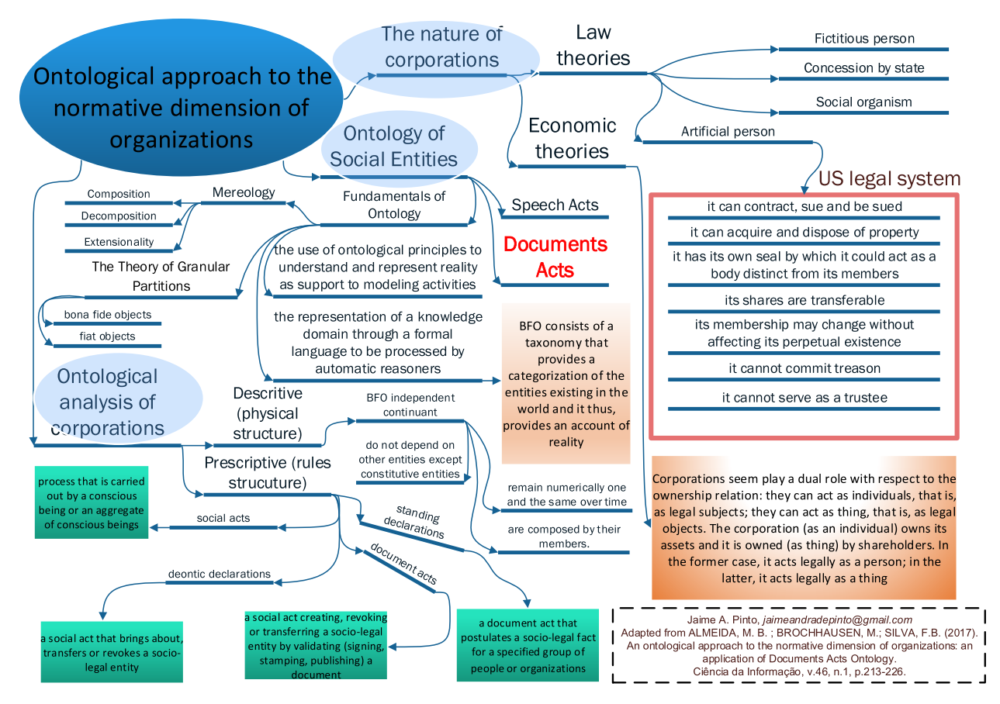

Quick-Start
Breve histórico
Ontologia é um termo filosófico para estudos que remontam à Aristóteles. Após um longo período de esquecimento, surgiu um novo interesse pelas teorias de Aristóteles a partir dos anos de 1970. Nos anos de 1960, surgiu a primeira sugestão para o uso de ontologias em sistemas de informação, em uma teoria de dados enunciada por Mealy:

Mealy, G. H. Another Look at Data. Proc. of the Joint Computer Conference, 1967, pp. 525-534.
Nos anos de 1980, a ideia foi finalmente teorizada por Wand & Weber, a partir dos estudos de Bunge; e nos anos 1990, pesquisadores da Inteligência Artifical – Guarino, Sowa, dentre outros – estudaram a ontologia como base de conhecimento para a arquitetura de sistemas especialistas da Inteligência Artificial.
O termo “Ontologia Aplicada” foi disseminado a partir do trabalho seminal de Barry Smith iniciado por volta dos anos 2000 com a Gene Ontology. Smith proporcionou a fundamentação lógico-filosófica para obtenção de inferências válidas e verdadeiras, bem como um incremento na qualidade dos sistemas de informação.
Nos últimos 20 anos, ontologia e web semântica têm se constituído em um campo de pesquisa vibrante, ainda que muito precise ser feito para alcançar a visão original de Tim Berners-Lee. Depois de um período restrito a academia, o tema passou a agenda de empresas e indústrias.
Comunidades e Eventos
- Formal Ontology in Information Systems (FOIS) Conference
- International Conference on Knowledge Engineering and Knowledge Management (EKAW)
- Extended Semantic Web Conference (ESWC)
- International Conference on Knowledge Representation and Reasoning (KR)
- International Conference on Biomedical Ontology (ICBO)
- Semantic Web Applications and Tools for the Life Sciences (SWAT4LS)
- International Semantic Web Conference (ISWC)
- Ontobras
- Bio-Ontologies
- Clinical and Translational Science Ontology Group
- Ontolog
- Nemo Group
- ReCOL Group
Ferramentas
Glossário básico
Ontologia como disciplina: a ontologia é uma disciplina da Filosofia, especificamente da Metafísica, que estuda as coisas do mundo e suas características.
Ontologia como artefato: trata-se de um artefato de representação do conhecimento construído para sistemas de informação em níveis variados de formalidade.
Ontologia formal: uma ontologia como artefato construída em uma linguagem formal, por exemplo, algum tipo de lógica. O termo também mantém outro significado em antigas tradições filosóficas.
Ontologia Aplicada: a conjunção de princípios da ontologia como disciplina e ontologias como artefatos. Adotam-se os princípios filosóficos como parâmetros de modelagem bem fundamentados para desenvolver ontologias como artefatos.
Ciência da Informação: é um campo de pesquisa preocupado com “os problemas da efetiva comunicação do conhecimento e seus registros entre os seres humanos, no contexto social, institucional ou individual do uso e das necessidades de informação”. As vezes confundida com “Ciência da Computação” pela denominação única adotada em alguns países.
Linguagem de representação lógica: trata-de uma linguagem formal, baseada em algum tipo de lógica, que é utilizada em artefatos de representação como as ontologias para fins de precisão e de raciocínio automático. Um exemplo é a Web Ontology Language.
Linguagem de consulta: da mesma forma que as conhecidas linguagens para consulta a bancos de dados, o SPARQL é a linguagem mais popular para consultas a repositórios da Web Semântica e ontologias.
Interoperabilidade: objetivo complexo e multifacetado que, de forma simples, pode ser definido como a capacidade de sistemas de informação em trocar dados sem a intervenção humana.
Basic Formal Ontology: a ontologia formal básica é uma ontologia de referência, genérica, testada por mais de 20 anos e amplamente adotada em alguns domínios (por exemplo, Biomedicina) para fins de marcação de dados e inferência automática.
Semântica (na Web Semântica): no contexto da Web Semântica, o termo “semântica” se refere a “semântica formal”, ou seja, trata-se de uma função que conecta dois conjuntos.
Ontologia do Social: aplicação de teorias metafísicas da ontologia ao campo das ciências sociais, com resultados práticos relevantes para explicar, por exemplo, a origem das organizações.
Livros para começar

Building Ontologies with Basic Formal Ontology (The MIT Press)
Ontologia em Ciência da Informação: Teoria e Método, VOLUME 01. Curitiba: CRV, 2020.
O que é?
Do ponto de vista teórico, ontologia é uma disciplina fundamental da Filosofia que tem origens na Grécia antiga e é representada em nossos dias pelo trabalho de metafísicos analíticos como David Armstrong e Kit Fine.
Nesse sentido filosófico, ontologia é uma disciplina teórica: a ciência do que é, dos tipos e estruturas de objetos, propriedades, eventos, processos e relações em todas as áreas da realidade.
Interseção de Filosofia e Ciência da Informação
Ontologia também é, contudo, uma disciplina de cunho prático de interesse crescente na interseção da Filosofia e da Ciência da Informação. Ferramentas e teorias ontológicas estão cada vez mais sendo aplicadas em informática, em segurança e inteligência, legislação, na indústria, finanças, etc., onde servem como base para uma forma de classificação aprimorada, integração de dados e raciocínio automático.
Pesquisa em Ontologia Aplicada
Se quiser saber mais sobre a pesquisa em ontologias para vida acadêmica, procure pesquisadores especializados da Ciência da Informação, profissionais com experiência (aqui ou aqui) e se informe no NCOR-BR. O mapa abaixo resume artigo com um visão do que a Ontologia Aplicada abrange:

ALMEIDA, M.B.; RIBEIRO, E.F.; BARCELOS, R. (2020). Toward a Document-Centered Ontological Theory for Information Architecture in Corporations. Journal of the American Society of Information Science and Technology. DOI: 10.1002/asi.24337, EUA.
Para Negócios
Arquitetura da Informação (AI) é um termo muito popular, mas nunca definido com precisão.
Trata-se de uma metáfora que faz analogia à visões dos projetos necessários para se construir um edifício, aplicada à organização do conhecimento e da informação corporativa.
Dentre essas visões, a forma de se conceber a estrutura da informação e do conhecimento corporativos é o fundamento capaz de guiar todo o projeto de AI.

ALMEIDA, M.B.; RIBEIRO, E.F.; BARCELOS, R. (2020). Toward a Document-Centered Ontological Theory for Information Architecture in Corporations. JASIST. DOI: 10.1002/asi.24337, EUA.
Para modelar a organização considera-se: i) um nível para o domínio, abrangendo o(s) nível(is) organizacional(is) obtido(s) pela modelagem de seus processos e objetos, e; ii) acresce-se o nível ontológico.
Esse último nível provê uma verificação da modelagem ao se basear nas coisas e não no que as pessoas pensam sobre as coisas.

ALMEIDA, M.B.; RIBEIRO, E.F.; BARCELOS, R. (2020). Toward a Document-Centered Ontological Theory for Information Architecture in Corporations. JASIST. DOI: 10.1002/asi.24337, EUA.
Embora a necessidade da teoria e estrutura possa ser questionada, visto que existem frameworks, metodologias e ferramentas para modelar negócios – por exemplo o TOGAF e o ArchiMate – que sao verdadeiros padrões-de-fato. Até mesmo, ainda mais popular, a UML.

Adaptado de Almeida, M.B. Ontologia em Ciência da Informação. Volume 1. Curitiba: CRV, 2020.
Apenas as abordagens ontológicas legítimas tiram proveito de princípios filosóficos sólidos, os quais podem transformar um modelo ontológico em um metamodelo rigoroso.
Esse metamodelo é capaz de reduzir a ambiguidade inerente a outros modelos espalhados pela organização e, na maioria da vezes, criados a partir de principios ad-hoc.
Para Governo
A variedade dos dados e informação na Administração Pública, seja na esfera federal, estadual ou municipal, remete a um grande desafio aos governos para prover serviços públicos de qualidade e de maneira mais integrada aos cidadãos.
Se considerada ainda a variedade e a sobreposição de dados nas mais distintas instâncias governamentais, o desafio se torna ainda maior visto que a massificação do uso de tecnologias de informação e comunicação (TICs) tem gerado cada vez mais dados e menos capacidade de sua profícua utilização.
Para isso, cabe entender o que se chama de “interoperabilidade” em seus vários sentidos e aspectos associados:
| Interoperabilidade técnica | padrões de comunicação, transporte, e armazenamento de dados. |
| Interoperabilidade semântica | significado dos dados originados em diferentes sistemas; soluções precisam assegurar interpretações uniformes entre os sistemas. |
| Interoperabilidade organizacional | envolve fluxos de trabalho, relações de poder e a cultura da instituição, que se manifestam na modelagem de processos de negócio. |
| Interoperabilidade política e humana | envolve a forma como dados são disseminados, e a decisão consciente de torná-los disponíveis na organização. |
| Interoperabilidade intercomunitária | acesso a dados originados em diferentes fontes, por organizações, especialistas e comunidades de natureza distintas. |
| Interoperabilidade legal | exigências e implicações legais de tornar dados livres e amplamente disponíveis. |
| Interoperabilidade internacional | cooperação e intercâmbio que envolve uma diversidade de padrões, além de problemas de comunicação e barreiras linguísticas. |
Essa lista de significados mostra que a interoperabilidade não se refere apenas a conformidade técnica, a qual é muito importante, mas não suficiente.
A ontologia atua na interoperabilidade semântica, reduzindo a ambiguidade e aumentando a precisão da terminologia, no sentido de permitir interpretações alinhadas mesmo sem a intervenção de pessoas.
Em algumas áreas, como a saúde, a interoperabilidade envolve dotar profissionais com o dado e a informação de qualidade para tomadas de decisão muitas vezes críticas.
A realidade nos postos de saude brasileiros: muita informação registrada e isolada para sempre.
Um relatório internacional dá conta que interoperabilidade de dispositivos médicos poderia eliminar pelo menos US $ 36 bilhões/ano em desperdícios nos ambientes hospitalares (dados de 2013 nos Estados Unidos). No mesmo momento, estima-se que um hospital de 500 leitos custe cerca de US $ 750 milhões, o que equivale dizer que a falta de interoperabilidade consome o equivalente a construção de 50 hospitais por ano.
Uma iniciativa da União Europeia também está em curso no mesmo sentido. No Brasil não se tem estimativas precisas, mas a situação não é diferente. O que vale para um setor importante como cuidados à saúde, vale também para setores estratégicos de qualquer nação.
Insitituições públicas são complexos sistemas normativos. A representação desses sistemas está explicada em artigo resumido pelo mapa mental abaixo:

Almeida, M.B.; Brochhausen, M.; Silva, F.B. (2017). An ontological approach to the normative dimension of organizations: an application of Documents Acts Ontology. CI, v.46, n.1, p.213-226.
Para Pesquisadores
O grupo de pesquisa Representação do Conhecimento, Ontologias e Linguagem (ReCOL) é certificado pelo Conselho Nacional de Desenvolvimento Científico e Tecnológico (CNPq) e desenvolve pesquisas na área da Representação e Organização do Conhecimento, contando principalmente com pesquisadores da Universidade Federal de Minas Gerais (UFMG) e da Fundação Getúlio Vargas (FGV).
Clique e conheça o ReCOL.